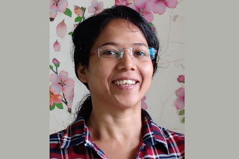

Madhuri
Dr. Madhuri Mukhopadhyay is a passionate researcher specializing in ultrafast coherent spectroscopy and nonlinear optics both in experiments and theory. She believes in “eduvate,” a blend of education and innovation, and is a lifelong learner. She is a dedicated educator, she has a wide range of expertise that includes quantum mechanics, electromagnetic wave, light-matter interaction, computation, and material properties. Her recent research interests focus on the nonlinear optical behaviour of nano-photonics, controlled dissipation during exciton transport, and the application of deep learning in ultrafast spectroscopy. In her leisure time, Madhuri loves to travel and play badminton.